| 程式語言 | TypeScript Python JavaScript HTML / CSS C / C++ C# PHP Java |
|---|---|
| 系統開發 | Next.js React React Native FastAPI Flask MySQL ASP.NET Django |
| AI / 資料應用 | YOLO OCR OpenCV TensorFlow / Keras CNN 資料增強 |
| 專案與協作 | 需求訪談 規格文件撰寫 時程／報價協商 Notion 任務管理 Git 版本控制 LaTeX 論文撰寫 |
| 語文能力 | 英文國際研討會 FC 2025 口頭發表 英文論文第一作者撰寫 科技英文 PVQC（Expert Tier Four） 持續閱讀英文技術文件與開源討論 |
我是賴家煜，就讀於國立臺中科技大學五專部資訊工程科。回顧進入這個領域的起點，與其說是一個清晰的志向，不如說是一種對「想解決問題」的天生執念。從小我就對「思考問題的解法」格外感興趣，時常在思考：這樣處理能否解決問題？是否有更快、更有效的方法？換一個零件能不能讓它重新運作？這種面對問題時想搞清楚根源、而非繞路迴避的習慣，在我接觸程式設計後找到了最適合它生長的土壤。專一修習網頁設計與程式設計時，我第一次意識到：程式是一種工具，可以幫助我解決日常生活真實的問題。下課後我並未停下，反而在課外自學——不是為了成績，而是想知道「我可以做到什麼程度」。
在五專的課程體系中，我的學習路徑並非線性，而是以「遇到問題、回頭補課」的方式螺旋推進。當我開始自學前端框架、嘗試寫出真正能互動的網頁時，我才在物件導向課程中理解了「前人為何要這樣設計」；當我在課外接觸 YOLO 與 CNN、嘗試讓電腦「看懂」影像時，人工智慧概論補全了我對損失函數與梯度下降的理論認識，讓我不只是能跑模型，而是能讀懂訓練曲線背後的意義。網路應用程式應用與 App 程式應用兩門課，則讓我建立起對全端架構的系統性認識。這段「先撞牆、再回頭找框架」的歷程讓我明白：課堂不是學習的起點，而是自學路上的校正機制。每一次回到課程中找到的，不只是答案，而是讓我能把問題問得更精準的方法。
這種習慣同時帶來了一個副作用：我極度容易看見問題，但解法經常是直覺式的。一直到我陸續承接外部專案、進入企業實作場景之後，我才意識到——光看見問題不夠，必須擁有把問題系統化拆解、與不同角色溝通、並做出取捨的能力。這正是我選擇申請雲科資管系最直接的理由。
真正讓我決定轉向資管的，是三件實務經驗中所累積的同一個發現。第一件是校園場地租借系統。專二時，我接下這個產學合作案的前端開發，並在團隊中扮演與校方溝通的橋接角色。當時的我對 Next.js 完全陌生，但更陌生的是另一件事：校方對系統的描述只有「希望好用一點」。我才意識到，工程訓練中沒有任何一堂課教我們怎麼把這句話拆成功能規格——但這正是雲科資管「系統分析與設計」與「管理資訊系統」要解決的核心問題。最終，這套系統不僅準時上線，也持續運行至今。
第二件是友通資訊（DFI）的 PCB 元件自動化製圖工具。從需求訪談、報價、時程協商，到系統設計、開發與文件交付，全部由我一人主導完成。技術不是最難的；最難的是判斷哪些功能該做、哪些該砍、要如何向工程師解釋為什麼某個 corner case 我選擇先不處理。這次經驗對應雲科資管發展方向之「兼顧管理知識的廣度與技術知識的深度——訓練資訊系統的規劃、分析、設計及實施能力」。我希望透過資管系統化的專案管理框架（PMBOK 等），讓自己從「憑直覺承接案子」轉變為「能向客戶與團隊清楚說明決策邏輯」的角色。
第三件是樂聯工業的系統除錯。實際走進傳統製造業廠房之後，我才理解到：技術債從來不只是程式碼問題。十年無文件的舊系統背後，是一整套組織運作模式——溝通模式、決策流程、技術採用邏輯，全部嵌進了那些難以閱讀的程式碼裡。這個觀察直接對應雲科資管發展方向之「資訊技術與管理和組織的整合——資訊化對組織及個人的影響、組織診斷與更新」。
上述三件事，讓我確認一件事：資工培養我「做得出東西」的能力，但實務世界更需要「做對的東西」的能力。資工教我們把規格實作出來，資管則教我們如何讓規格本身就是對的。我之所以申請雲科資管二技，不是因為想離開技術，而是想讓技術能解決更接近本質的問題。我希望以既有的開發、研究、PM 經驗為基礎，在雲科資管的「資料探勘」「決策支援」「策略資訊管理」「使用者經驗設計」等課程中，補上自己缺乏的那一塊——從技術交付者，成長為能與組織、客戶、產業真實對話的整合型人才。
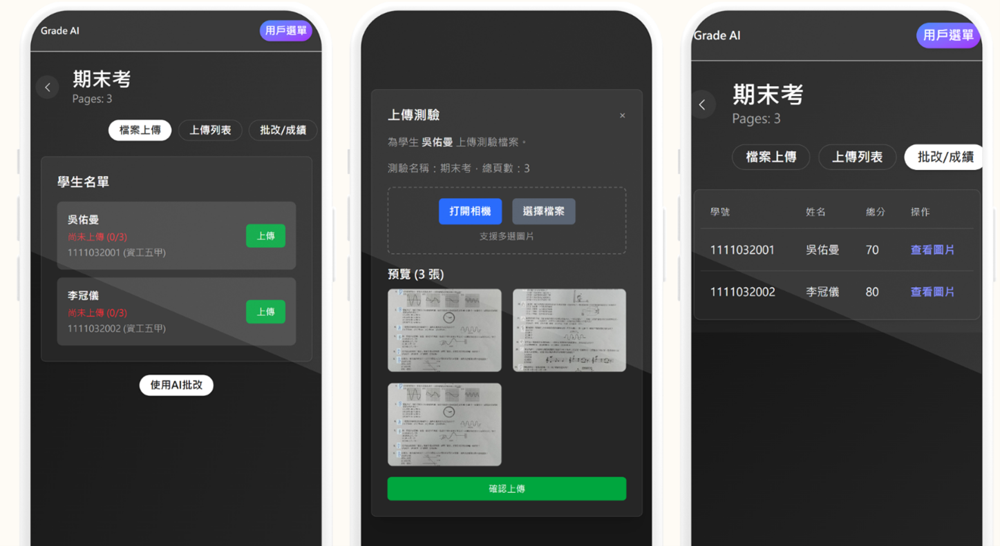
我的學習計畫以「補足管理面的系統訓練、延續技術面的整合深度」為核心，對應雲科資管系所之「資訊科技與管理並重」與「資訊系統開發與管理」兩大特色，分為短、中、長期三階段規劃如下。
| 既有能力（資工訓練） | 實務中發現的缺口 | 雲科資管對應課程／發展方向 |
|---|---|---|
| 程式開發、AI/CV 研究 | 缺乏系統化的需求分析方法 | 系統分析與設計、管理資訊系統 |
| AI / 電腦視覺實作 | 缺乏大規模資料處理框架 | 資料探勘與巨量資料分析、人工智慧應用及實務 |
| 非正式 PM 經驗 | 缺乏標準專案管理框架 | 專案管理（PMBOK）、軟體品質管理 |
| 接案中的商業溝通 | 缺乏管理理論支撐 | 管理學、溝通技巧、管理心理學 |
| 技術實作導向 | 缺乏策略性思維 | 決策支援系統、策略資訊管理、知識管理 |
| 單點開發經驗 | 缺乏組織層次的視角 | 資訊技術與組織整合（發展方向 4） |
短期目標聚焦於「補足管理面知識」與「銜接既有技術深度」。考量畢業學分配置與個人實務缺口，於雲科資管系所提供之課程中挑選下列五門作為核心修課方向，並同步規劃英文能力強化：
| 雲科資管精選課程 | 想學到的核心能力 | 應用場景／對應實務缺口 |
|---|---|---|
| 管理資訊系統 | 資訊系統如何影響組織決策、IS 在組織中的角色與管理控制理論 | 補足過去以「直覺」承接 PM 工作的缺口（DFI、校園場地租借） |
| 系統分析與設計 | 需求工程方法論（UML、UseCase、需求訪談與規格文件標準流程） | 把「希望系統好用一點」這類模糊需求轉譯為可執行規格的能力系統化 |
| 專案管理 | PMBOK 標準框架、時程估算、風險與資源管理、利害關係人溝通 | 對照 DFI 接案中直覺式的報價／時程判斷，建立能向客戶清楚說明的決策邏輯 |
| 資料探勘與巨量資料分析 （黃淑芬老師） |
結構化／非結構化資料的探勘流程、機器學習在企業情境的落地 | 目前最明確的能力缺口；銜接 AI/CV 研究到企業層級的資料應用 |
| 使用者經驗設計 | UX 評估框架、可用性測試、互動設計原則、使用者研究方法 | 補足前端開發中缺少的 UX 方法論（架站雲模板開發、Grade AI 操作介面） |
兩段英文研討會論文發表經驗（TWELF 2025 中英文摘要、FC 2025 全英文論文與口頭報告）讓我意識到——軟體業已是日常面對英文文件、英文同步協作的環境，「國際化」是已經發生、而非未來才會來的事。我希望在二技期間進一步強化英文實戰能力：
研究主題聚焦將 YOLO 物件偵測與 CNN-OCR 整合應用於自動化閱卷系統。此專案源於一個實際痛點：傳統紙本閱卷耗時且易受主觀影響，而現有 OCR 方案面對手寫字跡與雜訊時準確率明顯不足。系統核心架構分為兩層：前端以 YOLOv7 對試卷進行區域偵測（題目、作答區、題號），後端以 CNN-OCR 模型辨識手寫與印刷文字，最終透過排序與匹配演算法將辨識結果對應至標準答案，輸出結構化評分結果。
研究過程中，我系統性導入資料增強策略，將手寫樣本由 2,976 筆擴充至 23,806 筆，並針對 YOLO 輸出邊界框設計結合歐氏距離的客製化匹配邏輯。從資料標註、增強策略，到匹配邏輯的客製化實作，每一個環節都需要在理論與工程判斷之間反覆權衡。從問題定義、實驗設計到論文撰寫的完整流程，讓我體會到學術嚴謹性與工程執行力高度相通——對應雲科資管系核心能力中的「問題解決能力」與「分析能力」。
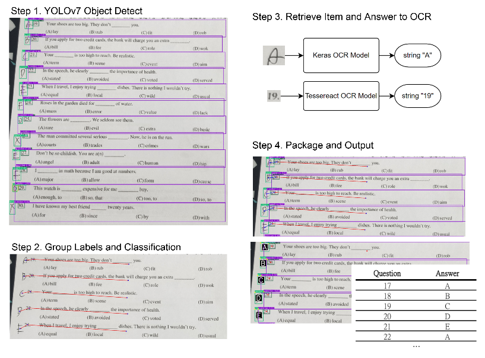
解決一個真實問題的難度，往往不在演算法本身，而在於資料、邊界條件與系統整合。最終系統在區域偵測上達到 mAP@0.5 97.1%，OCR 模型約 10 個 epoch 後收斂至 95% 準確率；但陌生手寫資料上仍約 50% 誤判，誠實揭示了泛化能力的邊界。這段研究所建立的「清楚定義問題、嚴謹執行、誠實面對模型限制」的結構化思維，是我希望帶入雲科資管系、進一步以資料探勘與決策支援理論強化的核心能力。
| 指標 | 數值 | 發表場次 |
|---|---|---|
| YOLOv7 區域偵測 mAP@0.5（資料增強前） | 93% | TWELF 2025 |
| YOLOv7 區域偵測 mAP@0.5（資料增強後） | 97.1% | FC 2025 |
| CNN-OCR 模型驗證準確率 | 95% | FC 2025 |
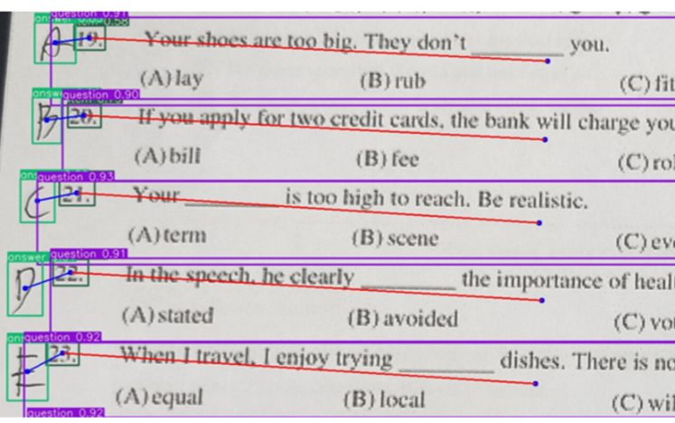

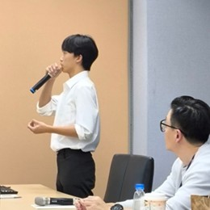
系統架構師 ｜ 全端開發主導 ｜ AI Pipeline 整合。將研討會的演算法核心，獨立設計為 Next.js + FastAPI + MySQL 的三層架構；非同步推論流程（YOLO → CNN-OCR → 匹配）由我設計狀態回饋機制；前端教師操作介面亦由我規劃三階段拆解。
同年，我參加校內專題競賽。系統以研討會論文的技術核心為基礎，進一步將 YOLOv7 + CNN-OCR 演算法落地為可實際操作的網頁應用程式——Grade AI。系統採前後端分離架構，以 Next.js 建構教師操作介面、FastAPI 處理業務邏輯、MySQL 儲存成績與批改紀錄，實現從試卷影像上傳、AI 辨識到成績報表的完整數位評量閉環，並於 2025 年資訊與流通學院專題成果展中入選展出。
將 AI pipeline 整合進 Web 應用時，最大的挑戰是非同步流程設計——YOLO 偵測、CNN-OCR 辨識、答案匹配三個串行推論步驟無法即時回應，必須設計非阻塞的狀態回饋機制。同時，目標使用者是對技術不熟悉的教師，操作流程被刻意拆解為三個明確階段，並在每個節點加入視覺回饋。這個過程讓我意識到，工程實作的品質不只體現在後端效能，更體現在「使用者能否順暢完成任務」——這正是雲科資管「使用者經驗設計」課程要訓練的核心。
Grade AI 的完成代表這套技術框架從學術驗證走向了實際可部署的產品形態。入選成果展不只是對研究成果的肯定，更是一次以真實使用情境檢驗系統設計的機會。從演算法到產品的完整開發歷程，讓我建立起對「端到端交付」的直接理解——一個好的技術方案，必須在能跑通的同時，也讓使用者看得懂、用得上。這正是我認為雲科資管「資訊系統開發與管理——兼顧管理廣度及技術深度」最珍貴的訓練。

2023 年，我以「連我阿公都會——手把手教你架網站」為主題參加 iThome 鐵人賽，內容涵蓋 HTML、CSS、JavaScript 至 Python Flask 的完整全端入門系列。報名前，我並非希望透過比賽證明技術，而是想驗證一件事：「如果我能在 30 天內把網頁開發從零講清楚，那我才算真的懂。」
三十天每天發文，比想像中辛苦。除了在課業與日常之間擠出寫作時間，更大的挑戰是把技術概念解釋到讓人真正看懂。自己會用一個東西、和能夠清楚說明它的運作邏輯，是完全不同的兩件事——每當試圖把某個概念寫清楚，才發現有些環節自己其實只是「大概知道」。這迫使我在寫每篇文章之前必須先把底層細節真正搞懂，再以讀者能理解的方式重新組織。這個過程是整個挑戰中最耗心力、卻也最有收穫的部分。
完賽後最意外的收穫，不是技術理解的深度，而是寫作本身的技巧——如何拆解概念、選擇類比、控制資訊密度。這套表達邏輯後來直接沿用到研討會論文撰寫上。對應雲科資管系核心能力中「表達溝通能力」與「團隊合作」——一個技術人能否說清楚，往往決定了團隊與組織能否真正接住他的成果。系學會也邀請我於 2026 年 6 月擔任前端工作坊講師，是這段經驗最直接的延伸。
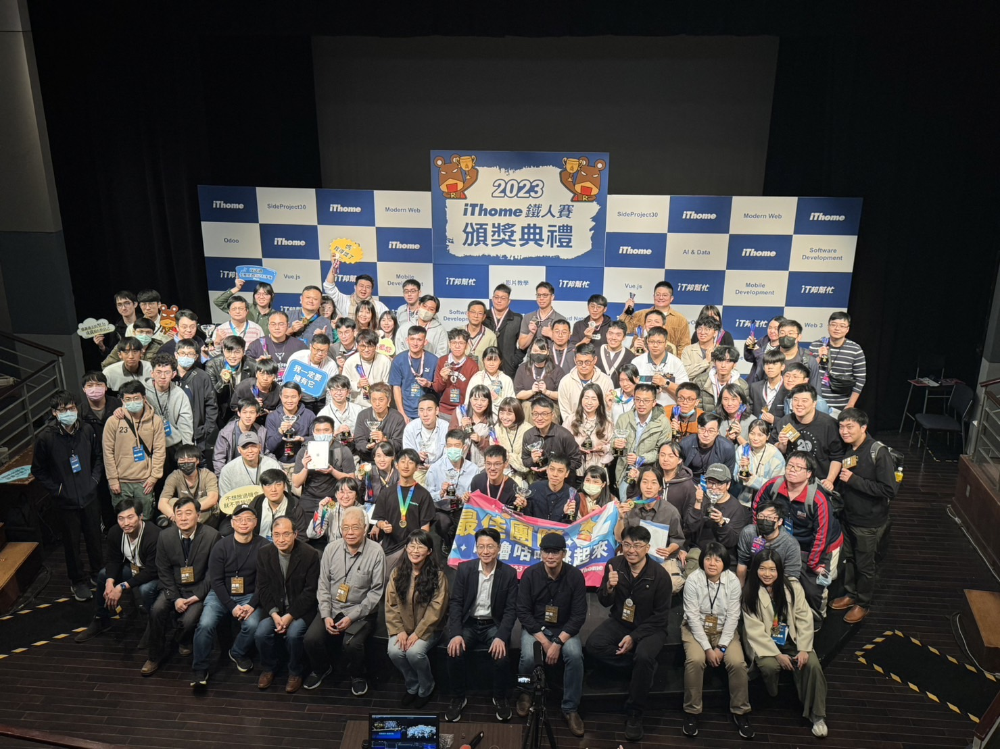
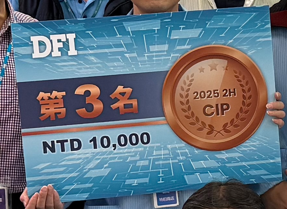
主導開發 ｜ 需求訪談 ｜ 系統架構設計 ｜ 系統文件撰寫主導。從演算法原理說明、API 介面文件到操作手冊，完整建立可供後續工程師接手維護的技術知識庫。
2025 至 2026 年間，我主導承接友通資訊（DFI）的 PCB 元件自動化製圖工具開發案。從需求訪談、報價、時程協商、系統設計、卷積文字密度演算法設計、Python 實作，到主導系統文件的撰寫與交付——所有核心技術決策由我負責，並與公司內部工程師、產品端進行多次需求對齊與驗收溝通，確保技術產出符合實際生產線需求。
技術核心是自訂的影像處理管線。在修習信號與系統課程時，我深入理解卷積（Convolution）運算的物理意義——對訊號局部特徵的加權疊加。我將此概念遷移至文字影像分析，設計「卷積文字密度演算法」：以一維卷積核掃描行列方向像素值、計算局部密度分布，自動推算切割座標。這正是 CNN 最底層的核心計算，也讓我對深度學習建立了更直接的理解連結。
商業面則涉及報價、時程協商、需求釐清與交付確認，並同步建立完整的系統技術文件——這些是工程訓練中沒有教的內容。它讓我清楚意識到：未來如果要繼續承接更複雜的企業專案，必須要有系統化的專案管理 ／ 軟體品質管理 ／ 知識管理訓練，這正是我選擇雲科資管的關鍵理由。
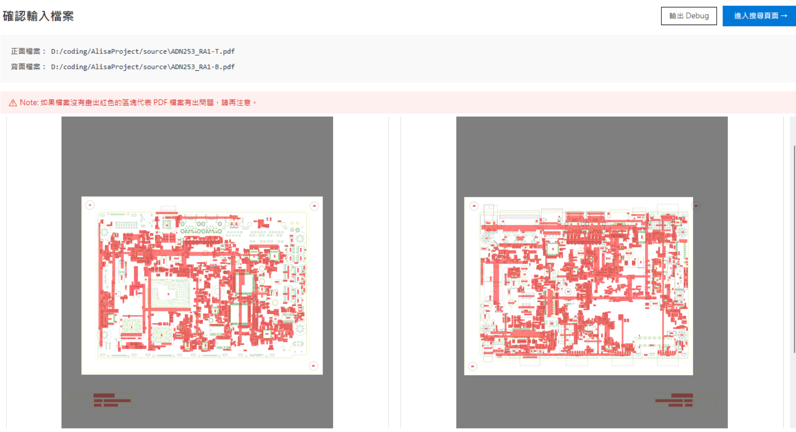
選擇「卷積文字密度演算法」而非深度學習切割模型的理由：（1）資料限制——PCB 元件圖數量有限，深度學習易過擬合；（2）可解釋性——傳產客戶需要的是「為什麼這樣切」的明確邏輯；（3）部署成本——客戶端不必裝 GPU 或重型框架；（4）可調參數——卷積核大小可由工程師根據新元件樣式直接微調。這次選型驗證了「最先進的方案不等於最適合的方案」——這正是我希望在雲科資管「管理資訊系統」與「系統分析與設計」中進一步系統化的判斷力。
工具正式交付後，將工程師原本數小時的手動作業縮短至數秒，並獲得公司年會專案評比第四名肯定。我在此專案中除主導開發外，另一項關鍵貢獻是系統文件的撰寫與交付——涵蓋演算法原理、API 介面、操作手冊等完整文件，確保後續工程師可順利接手維護。這段經驗讓我深刻理解：程式碼本身不是交付物，可被組織持續使用的系統知識才是——這正是雲科資管「軟體品質管理」「知識管理」的訓練核心。
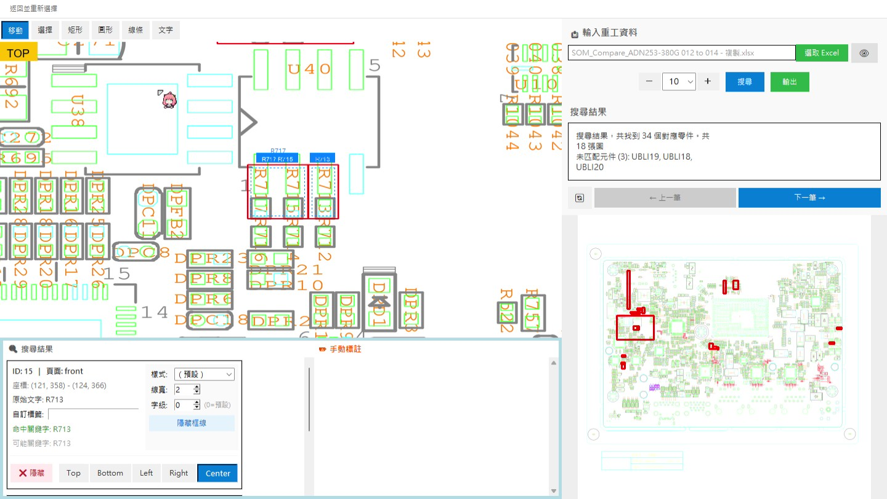
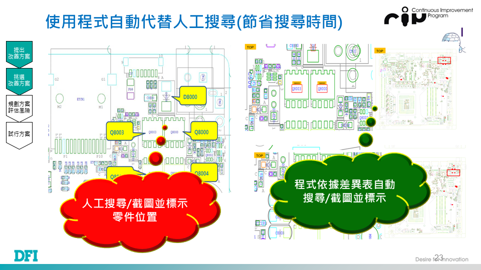
校園場地租借系統是我第一次在真實專案中完整扮演 PM 角色的經歷。在這個產學合作計畫中，我負責與校方進行需求訪談，將模糊行政需求轉化為具體功能規格文件；同時主導前端開發與後端 API 串接，並協調團隊成員進度。
這段經歷讓我理解到，PM 的核心挑戰不在寫文件，而在於在需求方、開發者與時程之間找到平衡點。當客戶說「希望系統好用一點」，工程師需要的是把這句話轉化為可執行的技術規格的能力——這正是雲科資管「系統分析與設計」的需求工程、「管理資訊系統」的使用者行為分析所要訓練的核心，也是我在資工訓練中從未系統化學過的部分。
系統目前仍實際運行中，持續為校方提供穩定的數位化場地管理服務，這是對整個開發過程最直接的肯定。對應雲科資管特色 2「資訊管理理論與實務兼具——管理資訊化對組織及個人的影響」。
該項目的核心目標是為使用者提供可自由排版、置入圖片與自訂配色的商業化網頁模板。我以前端工程師身份針對舊有介面設計全新的公用版型，並在過程中主動與業主溝通、確認需求規格，確保開發方向與業務目標一致。
最大的挑戰在於如何讓模板同時具備美觀性與可擴充性：前端要讓使用者個人化不跑版，後端也需要有足夠的彈性。為此我建立明確的樣式規格、預留擴充接口，並撰寫對應文件。配色選用與間距比例方面，我大量參考日本與外商公司的網站，同時閱讀排版設計書籍，有系統地建立視覺語言——對應雲科資管「使用者經驗設計」課程關注的領域。
自 2023 年完成第一版後，持續受邀配合後續功能迭代，成為長期合作的前端開發夥伴。這段經歷讓我確認自己能在商業化產品的環境中，兼顧工程嚴謹與設計品味——這也是我希望能在雲科資管二技階段，繼續以「電子商務」「顧客關係管理」等課程深化的視角。
獨立除錯 ｜ 系統健檢 ｜ 硬軟體升級建議提供者。2025 年，我受邀協助樂聯工業處理一套已運作 15 年的內部系統——不同於團隊協作的開發專案，這次是一個人進入現場，獨立完成除錯工作，並向公司提供硬體升級與軟體優化的建議。
這套系統無原始開發者、無文件、跨多代技術棧（PHP 4 → 7 混用）。我必須獨立完成：（1）透過閱讀 legacy code 還原業務邏輯；（2）與作業員、工程師訪談，補齊文件缺口；（3）在不影響日常運作的前提下定位錯誤與效能瓶頸。
單純「修好 bug」只解決症狀。我額外向公司提出升級建議，涵蓋兩個層次：（1）硬體面——伺服器規格瓶頸分析、儲存設備升級（SSD vs HDD）的成本效益建議；（2）軟體面——哪些模組可修補、哪些建議重構、哪些已過時應淘汰。這讓我從「執行者」轉變為「建議者」——必須回答的不只是「能不能修好」，還包含「值不值得修」與「怎麼修比較划算」。
這次經驗讓我意識到：技術人的真正價值，是把技術可行性翻譯成商業決策。同時也讓我看到「技術債背後是組織」——15 年的程式碼裡，嵌入的不只是 bug，更是組織的溝通模式、決策慣性與技術採用邏輯。這正是雲科資管「策略資訊管理」「組織診斷與更新」「軟體品質管理」想訓練的核心，也是我從工程師轉向整合型人才的關鍵起點。
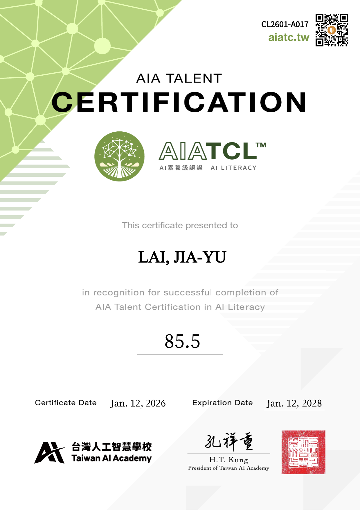
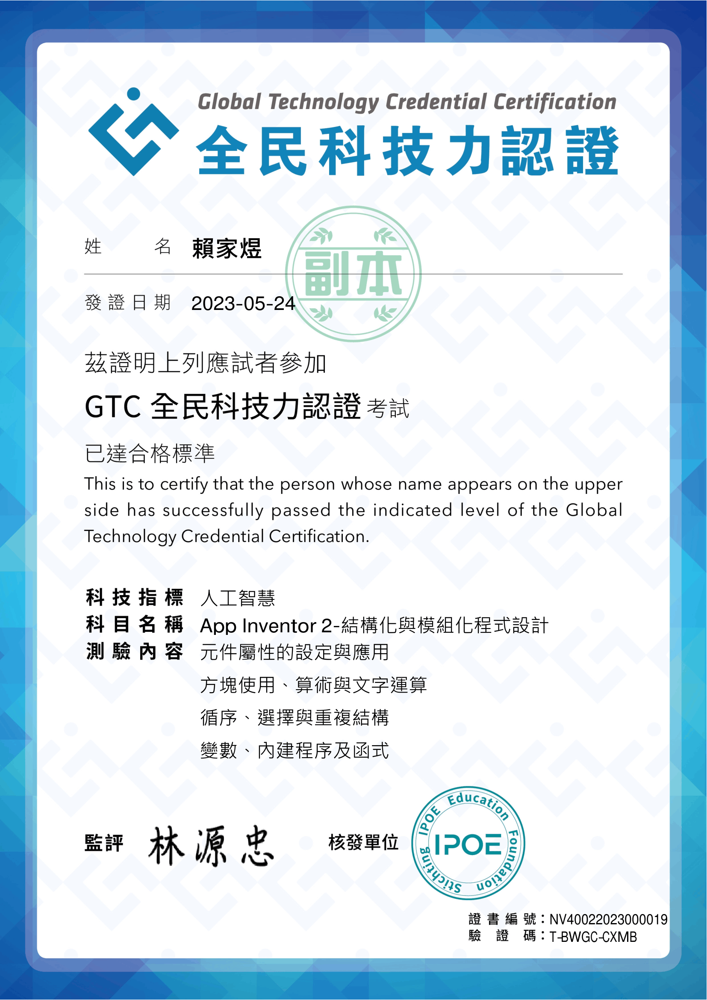
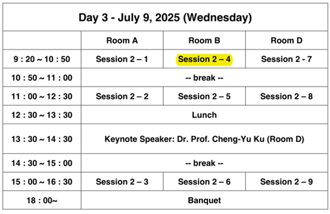
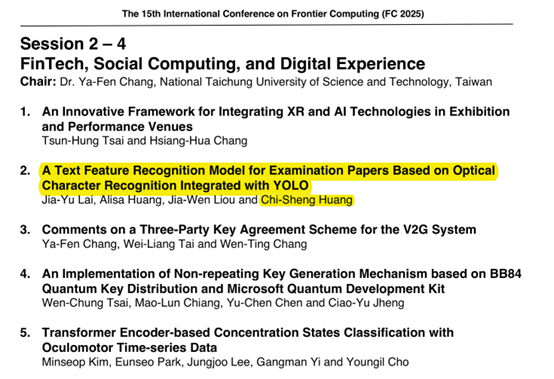
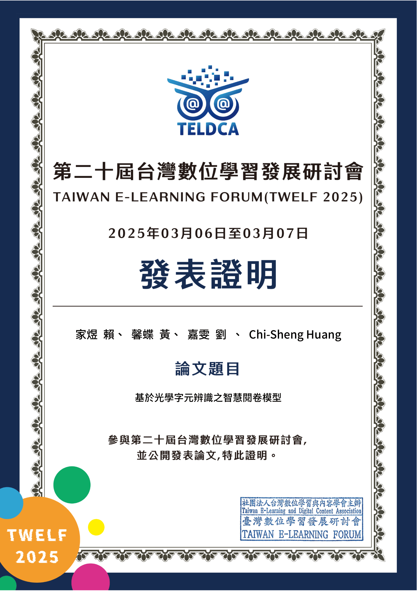